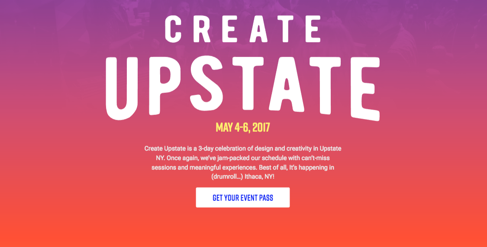
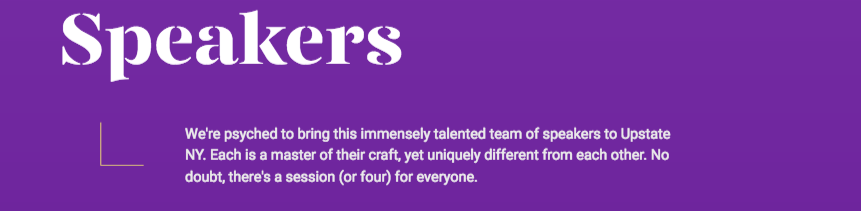
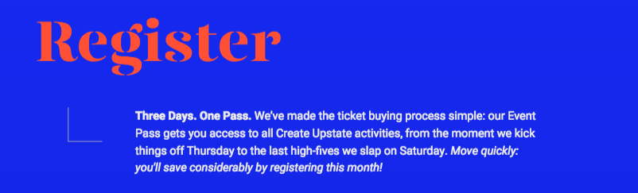
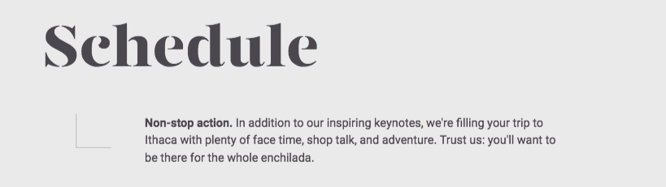

Create Upstate Analysis
- Very evenly across the top. Everything is nice and neat with plenty of space between each option
- Landing page, Speakers, Register, Schedule




- Section 1 and 2 are seperated by a picture of a landscape. Section 2, 3, and 4 are each seperated from each other by a squigly line and color change.
- Organizes all the pieces of each speaker's respective section into a nice little bundle.
- Similar to the navigation layout but "create upstate" is to the left side instead of the middle, links to other such information like about and contact are centered, and social media links are bubbled on the right side.
- The footer feels more balanced with the gray text in the center and the highly colored pieces off to the sides. The header is off balance with the "EVENT PASS" button being in a blue box.